1. Vista general: 11 servicios, 11 tópicos y 13 prefijos
La plataforma tiene 13 piezas propias: los 11 microservicios, el API Gateway y el Service Registry (Eureka). Cada microservicio es un subdominio con su base PostgreSQL (una base y un usuario por servicio: ninguno lee la base de otro), su parte del núcleo y sus adaptadores Spring. Se hablan de dos formas: por eventos en Kafka casi siempre, y por REST síncrono solo en dos casos.
| Componente | Qué es | Prefijo en el gateway | Clases del núcleo | Réplicas (página 5) |
|---|---|---|---|---|
| ms-identidad | quién es quién | /api/auth/api/usuarios | 25 | 3 a 8 |
| ms-pedidos | lo que piden las mesas | /api/pedidos | 15 | 4 a 20 |
| ms-menu | la carta | /api/platos | 13 | 2 a 4 |
| ms-inventario | las existencias | /api/inventario | 13 | 2 a 6 |
| ms-solicitudes | lo que pide la cocina | /api/solicitudes | 12 | 2 a 6 |
| ms-cotizaciones | el corazón de compras | /api/cotizaciones/api/proveedores | 28 | 2 a 6 |
| ms-ordenes | la compra | /api/ordenes-compra | 16 | 2 a 4 |
| ms-notificaciones | los avisos | /api/notificaciones | 24 | 2 a 4 |
| ms-integracion | la frontera SOA | /api/integracion | 9 | 2 a 4 |
| ms-administracion | parámetros, auditoría y logs | /api/admin | 14 | 2 a 4 |
| ms-analitica | el tablero y las promociones | /api/bam | 21 | 2 a 4 |
| api-gateway | la única puerta de la SPA | los 13 | — | 3 |
| service-registry | dónde está cada instancia | — | — | 2 |
Las réplicas son las mínimas y máximas del diagrama de despliegue (página 5), con autoescalado al 65 % de CPU. En el equipo corre una réplica de cada uno.
Quién publica y quién consume cada tópico
Son los 10 tópicos de negocio más la cola de errores de ms-notificaciones. P = publica, C = consume. La tabla se desliza a lo ancho en el teléfono.
| Servicio | pedido. | menu. | inventario. | solicitud. | solicitud. | cotizacion. | cotizacion. | orden. | tendencia. | auditoria. | notificaciones. |
|---|---|---|---|---|---|---|---|---|---|---|---|
| ms-identidad | P | ||||||||||
| ms-pedidos | P | C | P | ||||||||
| ms-menu | P | P | |||||||||
| ms-inventario | C | C | P | C | P | ||||||
| ms-solicitudes | P | P | C | C | P | ||||||
| ms-cotizaciones | P | P | C | P | |||||||
| ms-ordenes | P | P | |||||||||
| ms-notificaciones | C | C | C | C | C | C | P | P·C | |||
| ms-integracion | P | ||||||||||
| ms-administracion | C | ||||||||||
| ms-analitica | C | C | C | C | C | C | P | P |
La misma información por tópico, con la clase que escucha:
| Tópico | Lo publica | Lo consume | Con qué clase |
|---|---|---|---|
pedido.registrado | ms-pedidos | ms-inventario, ms-analitica | PedidoRegistradoListener, NegocioEventsListener |
menu.actualizado | ms-menu | ms-pedidos, ms-inventario, ms-analitica | MenuActualizadoListener, InventarioEventsListener, NombresNegocio |
inventario.stock-bajo | ms-inventario | ms-notificaciones, ms-analitica | NotificacionListeners, NegocioEventsListener |
solicitud.registrada | ms-solicitudes | ms-inventario, ms-notificaciones, ms-analitica | InventarioEventsListener, NotificacionListeners, NegocioEventsListener |
solicitud.en-tramite | ms-solicitudes | ms-notificaciones | NotificacionListeners |
cotizacion.enviada | ms-cotizaciones | ms-solicitudes, ms-notificaciones | CotizacionEventsListener, NotificacionListeners |
cotizacion.validada | ms-cotizaciones | ms-analitica | NegocioEventsListener |
orden.generada | ms-ordenes | ms-solicitudes, ms-cotizaciones, ms-notificaciones, ms-analitica | CotizacionEventsListener, OrdenGeneradaListener, NotificacionListeners, NegocioEventsListener |
tendencia.detectada | ms-analitica | ms-notificaciones | NotificacionListeners |
auditoria.evento | Los otros 10 servicios | ms-administracion | AuditoriaListener |
notificaciones.dlq | ms-notificaciones | ms-notificaciones | ReprocesoColaErrores |
AdministracionService). ms-notificaciones es el que más escucha (seis tópicos) y no publica nada de negocio.Los 13 prefijos del gateway
Salen de servicios/api-gateway/src/main/resources/application.yml. Cada ruta va a lb://ms-…:
el gateway pregunta a Eureka por las instancias vivas y reparte entre ellas. ms-identidad y ms-cotizaciones tienen dos
prefijos cada uno; por eso son 13 para 11 servicios.
| Prefijo | Servicio | Id de la ruta |
|---|---|---|
/api/auth/** | ms-identidad | identidad-auth |
/api/usuarios/** | ms-identidad | identidad-usuarios |
/api/pedidos/** | ms-pedidos | pedidos-pedidos |
/api/platos/** | ms-menu | menu-platos |
/api/inventario/** | ms-inventario | inventario-inventario |
/api/solicitudes/** | ms-solicitudes | solicitudes-solicitudes |
/api/cotizaciones/** | ms-cotizaciones | cotizaciones-cotizaciones |
/api/proveedores/** | ms-cotizaciones | cotizaciones-proveedores |
/api/ordenes-compra/** | ms-ordenes | ordenes-ordenes-compra |
/api/admin/** | ms-administracion | administracion-admin |
/api/bam/** | ms-analitica | analitica-bam |
/api/notificaciones/** | ms-notificaciones | notificaciones-notificaciones |
/api/integracion/** | ms-integracion | integracion-integracion |
Las llamadas síncronas
| Desde | Hacia | Para qué | Si el destino no responde |
|---|---|---|---|
| api-gateway | los 11 servicios (lb://) | Enrutar cada petición de la SPA | 503 a la SPA; las demás rutas siguen |
| api-gateway y cada servicio | ms-identidad, GET /api/auth/jwks | La llave pública para validar el JWT | Siguen con la llave que ya tienen |
| ms-cotizaciones | ms-integracion, GET /interno/precios/{id} | El precio de referencia del Ministerio (V13) | La cotización queda PENDIENTE DE PRECIO y se reenvía después |
| ms-ordenes | ms-cotizaciones, GET /api/cotizaciones/{numero} | Leer la cotización OPCIONADA (V21) | 503 «No se pudo leer la cotización…»; se reintenta |
Las dos llamadas entre servicios van por Eureka y el balanceador del cliente (no por el gateway), con el JWT de quien
hace la operación y su X-Correlation-Id; en producción, además, mTLS. Las salidas a sistemas que no son
servicios: el Ministerio (SOAP, ms-integracion), el servidor de correo (ms-notificaciones), la API de redes sociales
(ms-analitica), Elasticsearch (ms-administracion y los logs de todos), Redis y el almacén de objetos.
Cómo está armado cada servicio
Todos usan la librería compartido, que trae lo que es igual en los 11: EventoDominio y
EventPublisherPort; KafkaEventPublisher, que no publica directo sino que guarda el evento en la
tabla outbox en la misma transacción que el cambio (OutboxEventos); ReleOutbox, que
los publica en Kafka en orden y los borra; EventosProcesados, que marca cada evento recibido en
evento_procesado para no procesarlo dos veces; la seguridad del servicio (SeguridadServicio,
@PreAuthorize), la correlación del recorrido y el envío de errores a Elasticsearch. Por eso los 11 tienen
tabla outbox, y los que consumen eventos tienen además evento_procesado (ms-identidad, ms-menu,
ms-ordenes y ms-integracion no consumen nada).
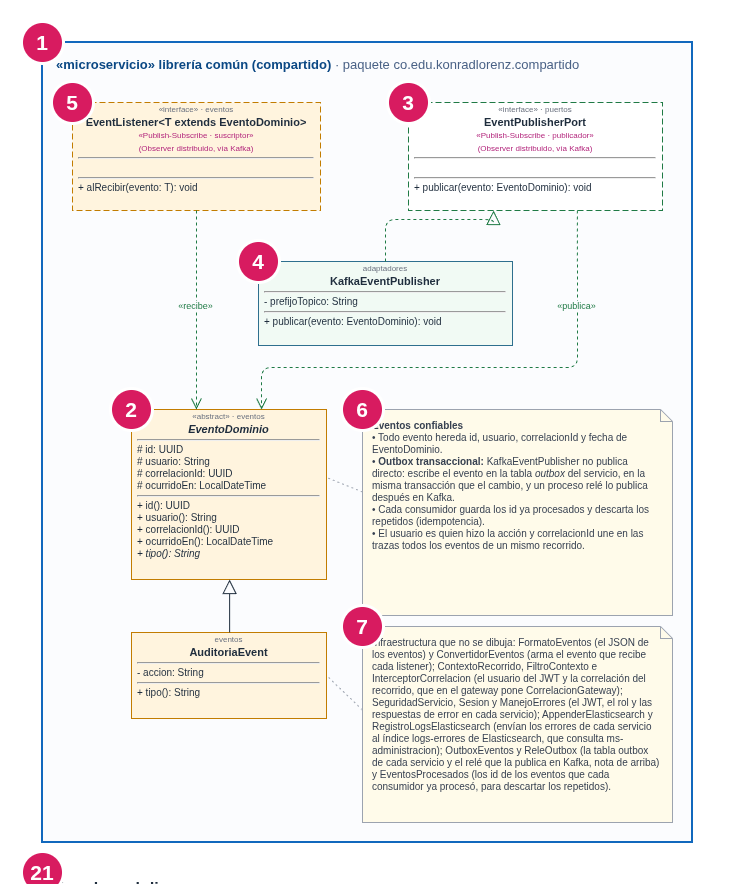
| N.º | Qué marca (página 4a, los mismos números de la guía de los diagramas) |
|---|---|
| Librería compartido | |
| EventoDominio «abstract» | |
| EventPublisherPort | |
| KafkaEventPublisher | |
| EventListener | |
| Eventos confiables | |
| Infraestructura que no se dibuja | |
| Cómo leer el diagrama |
2. El API Gateway y el Service Registry
API Gateway (Spring Cloud Gateway) · la única puerta
Nginx sirve la SPA y pasa todo /api/** al gateway. El gateway es la Facade del sistema: la SPA
conoce una sola dirección y no sabe cuántos servicios hay detrás. En cada petición:
- Valida el JWT (firma RS256 con la llave pública de ms-identidad y vigencia); solo
/api/auth/**pasa sin token. Para el WebSocket de la alarma acepta el token en?access_token=, porque el navegador no deja poner la cabecera. - Limita la tasa (
RequestRateLimiter, DEC-104): un balde por usuario del JWT y, sin sesión, uno por la IP real (X-Real-IP, que pone Nginx). 100 peticiones por segundo con ráfagas de 200; los baldes viven en Redis, así que el límite vale igual con varias réplicas. Pasado el límite, 429. - Pone el
X-Correlation-Idsi no viene (CorrelacionGateway): con él se sigue un recorrido en la auditoría, los logs y la traza de correos. - Enruta por prefijo a
lb://ms-…, a una instancia viva que le da Eureka.
Clases: SeguridadGateway, CorrelacionGateway y LimiteTasaGateway, en
servicios/api-gateway/. Cada servicio vuelve a validar el token y el rol: el gateway no es la única barrera.
Service Registry (Eureka) · dónde está cada uno
Cada servicio se registra al arrancar y manda un latido cada 30 segundos; el gateway y los clientes REST
(LoadBalancerClient en ms-cotizaciones y ms-ordenes) le preguntan dónde hay una instancia viva. Así una réplica
que arranca recibe tráfico sin cambiar ninguna configuración. Tarda un poco en propagarse: al encender la plataforma conviene
esperar unos 75 segundos antes de la primera cotización.

/plataforma/: los 11 servicios con su prefijo y su estado en Eureka (el círculo es el del paso de la demo en la guía de la plataforma)
localhost:8761): las instancias registradasEn el diagrama de contenedores
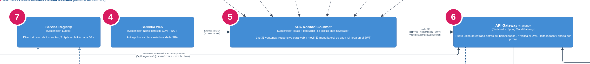
| N.º | Qué marca (página 3a, los mismos números de la guía de los diagramas) |
|---|---|
| Servidor web (Nginx) | |
| SPA Konrad Gourmet | |
| API Gateway «Facade» | |
| Service Registry (Eureka) |
3. ms-identidad · quién es quién
«ms-identidad es el único que sabe quién es cada usuario: emite el token y el menú de cada rol; los demás solo validan la firma.»
Inicio de sesión con OAuth 2.0: comprueba la clave con BCrypt y emite el JWT firmado con RS256, que trae el rol, la sucursal y el menú del rol. Publica su llave pública (JWKS) para que el gateway y los demás servicios validen el token sin llamarlo en cada petición. El administrador da de alta usuarios con la regla de contraseña.
- Publica
auditoria.evento→ ms-administracion- Consume
- Nada
- Base y tablas
sucursal,usuario,llave_firma,outbox- Síncrono
- Lo llaman a él: el gateway y cada servicio leen la llave pública en
GET /api/auth/jwks(dentro de la red, sin pasar por el gateway). Él no llama a ningún servicio. - Patrones
- Factory Method (construirMenu() por rol)Composite (ElementoMenu)OAuth 2.0 / JWT RS256Hexagonal
Ventanas que atiende
Lo que entra al servicio
| Tipo | Ruta, tópico o cuándo corre | Para qué | Clase |
|---|---|---|---|
| REST | POST /api/auth/token | V01: inicio de sesión; devuelve el JWT con el rol, la sucursal y el menú | AuthRestController |
| REST | POST /api/usuarios | Alta de usuarios del administrador (correo único y regla de contraseña) | UsuarioRestController |
| REST | GET /api/auth/jwks | La llave pública del JWT; la leen el gateway y los servicios | JwksController |
Sus clases
Núcleo (25 clases, Java sin frameworks)
- adaptadores/entrada/
AuthRestController,UsuarioRestController - adaptadores/salida/
BCryptCifradorAdapter,JwtEmisorAdapter,UsuarioJpaAdapter - aplicacion/
IniciarSesionService,RegistrarUsuarioService - dominio/
Administrador,AuxiliarCompras,DirectorComercial,DirectorCompras,ElementoMenu,GrupoMenu,JefeCocina,Mesero,OpcionMenu,PoliticaContrasena,Sucursal,TokenAcceso,Usuario - puertos/entrada/
IniciarSesionUseCase,RegistrarUsuarioUseCase - puertos/salida/
CifradorPort,EmisorTokenPort,UsuarioRepositoryPort
Adaptadores de entrada (Spring)
AuthRestController, UsuarioRestController
Adaptadores de salida (Spring)
BCryptCifradorAdapter, JwtEmisorAdapter, UsuarioJpaAdapter
Además, 4 entidades y repositorios JPA internos de sus adaptadores.
Configuración
ConfiguracionIdentidad, DatosIniciales, JwksController, LlaveFirma
En negrita, las que conviene nombrar. Los adaptadores del núcleo tienen la misma forma que los de Spring; el servicio usa los de Spring.
La llave privada se guarda en su base (llave_firma) y no sale del servicio. El intento fallido de inicio de sesión también se audita: es el único endpoint que escribe sin transacción, para que el evento quede aunque la respuesta sea un error.
Su paquete en el diagrama de clases
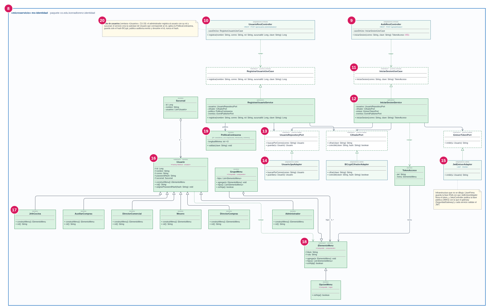
| N.º | Qué marca (página 4a, los mismos números de la guía de los diagramas) |
|---|---|
| ms-identidad | |
| AuthRestController | |
| UsuarioRestController | |
| IniciarSesionUseCase | |
| IniciarSesionService | |
| Puertos de salida | |
| Adaptadores de salida | |
| JwtEmisorAdapter «RS256» | |
| Usuario «abstract» · Factory Method | |
| Los seis roles | |
| ElementoMenu · Composite | |
| PoliticaContrasena | |
| Alta de usuarios |
4. ms-pedidos · lo que piden las mesas
«ms-pedidos registra lo que pide cada mesa y avisa con pedido.registrado; es el que más carga tiene en hora pico.»
Los pedidos del mesero por mesa: el catálogo con foto y precio, las mesas de la sucursal, el registro del pedido y la lista del turno. El catálogo es una copia local que arma con menu.actualizado, así no depende de ms-menu para tomar un pedido.
- Publica
pedido.registrado→ ms-inventario, ms-analiticaauditoria.evento→ ms-administracion- Consume
menu.actualizado← ms-menu- Base y tablas
mesa,pedido,detalle_pedido,plato_catalogo,outbox,evento_procesado- Síncrono
- Ninguno. La foto del plato la pide la SPA a ms-menu, no ms-pedidos.
- Patrones
- HexagonalPublish-SubscribeCopia local (catálogo)Outbox
Ventanas que atiende


Lo que entra al servicio
| Tipo | Ruta, tópico o cuándo corre | Para qué | Clase |
|---|---|---|---|
| Kafka | menu.actualizado | Mantiene la copia local del catálogo de platos | MenuActualizadoListener |
| REST | POST /api/pedidos | V03: registra el pedido de la mesa y publica pedido.registrado | PedidoRestController |
| REST | GET /api/pedidos | V02 y «Pedidos del turno»: los pedidos del mesero en su turno | PedidoRestController |
| REST | GET /api/pedidos/catalogo | V03: los platos activos de la sucursal con su precio | PedidoRestController |
| REST | GET /api/pedidos/mesas | V03: las mesas de la sucursal | PedidoRestController |
Sus clases
Núcleo (15 clases, Java sin frameworks)
- adaptadores/entrada/
MenuActualizadoListener,PedidoRestController - adaptadores/salida/
CatalogoJpaAdapter,PedidoJpaAdapter - aplicacion/
PedidoService - dominio/
CatalogoPlatos,DetallePedido,EstadoPedido,Mesa,Pedido,PlatoCatalogo - eventos/
PedidoRegistradoEvent - puertos/entrada/
RegistrarPedidoUseCase - puertos/salida/
CatalogoRepositoryPort,PedidoRepositoryPort
Adaptadores de entrada (Spring)
MenuActualizadoListener, PedidoRestController
Adaptadores de salida (Spring)
CatalogoJpaAdapter, PedidoJpaAdapter
Además, 6 entidades y repositorios JPA internos de sus adaptadores.
Configuración
ConfiguracionPedidos
En negrita, las que conviene nombrar. Los adaptadores del núcleo tienen la misma forma que los de Spring; el servicio usa los de Spring.
Es el servicio con más réplicas del despliegue porque los meseros de todas las sucursales registran pedidos todo el día.
Su paquete en el diagrama de clases
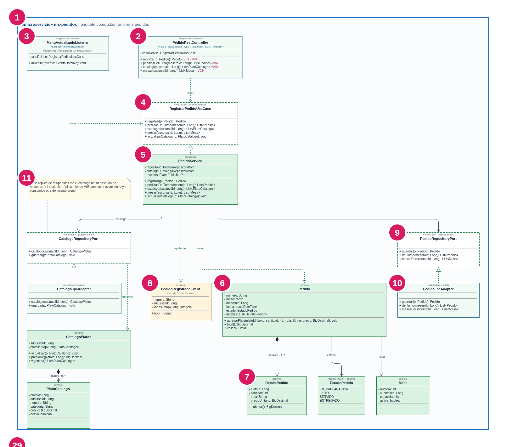
| N.º | Qué marca (página 4b, los mismos números de la guía de los diagramas) |
|---|---|
| ms-pedidos | |
| PedidoRestController | |
| MenuActualizadoListener | |
| RegistrarPedidoUseCase | |
| PedidoService | |
| Pedido | |
| DetallePedido | |
| PedidoRegistradoEvent | |
| PedidoRepositoryPort | |
| PedidoJpaAdapter | |
| Catálogo en la base | |
| Cómo leer el diagrama |
6. ms-inventario · las existencias
«ms-inventario descuenta lo que se consumió cada noche y avisa una sola vez cuando un insumo baja del 25 %.»
Las existencias por sucursal, las recetas locales (de menu.actualizado) y el consumo de cada pedido (de pedido.registrado). A las 23:59 descuenta el consumo del día y, si un insumo cruza el 25 % de su stock de referencia, publica inventario.stock-bajo una sola vez. Con solicitud.registrada marca la alerta como atendida.
- Publica
inventario.stock-bajo→ ms-notificaciones, ms-analiticaauditoria.evento→ ms-administracion- Consume
pedido.registrado← ms-pedidosmenu.actualizado← ms-menusolicitud.registrada← ms-solicitudes- Base y tablas
insumo,receta,consumo_pendiente,shedlock,outbox,evento_procesado- Síncrono
- Ninguno.
- Patrones
- HexagonalPublish-SubscribeTarea programada con ShedLockConsumidor idempotente
Ventanas que atiende


Lo que entra al servicio
| Tipo | Ruta, tópico o cuándo corre | Para qué | Clase |
|---|---|---|---|
| Tarea | todos los días a las 23:59 (0 59 23 * * *) | Cierre del día: descuenta el consumo y publica inventario.stock-bajo | ConsumoDiarioJob |
| Kafka | menu.actualizado | Mantiene las recetas locales | InventarioEventsListener |
| Kafka | solicitud.registrada | Marca como atendida la alerta del insumo solicitado | InventarioEventsListener |
| REST | GET /api/inventario/alertas | V05: las alertas de stock bajo del jefe | InventarioRestController |
| REST | GET /api/inventario/insumos | V07: existencias con su porcentaje | InventarioRestController |
| Kafka | pedido.registrado | Suma el consumo pendiente del pedido | PedidoRegistradoListener |
| REST | POST /api/inventario/cierre | Botón «Cierre del día» de V07, solo para la demo | CierreDiaController |
Sus clases
Núcleo (13 clases, Java sin frameworks)
- adaptadores/entrada/
ConsumoDiarioJob,InventarioEventsListener,InventarioRestController,PedidoRegistradoListener - adaptadores/salida/
InventarioJpaAdapter - aplicacion/
InventarioService - dominio/
InsumoInventario,Inventario,RecetaPlato,UmbralStock - eventos/
StockBajoEvent - puertos/entrada/
GestionarInventarioUseCase - puertos/salida/
InventarioRepositoryPort
Adaptadores de entrada (Spring)
ConsumoDiarioJob, InventarioEventsListener, InventarioRestController, PedidoRegistradoListener
Adaptadores de salida (Spring)
InventarioJpaAdapter
Además, 2 entidades y repositorios JPA internos de sus adaptadores.
Configuración
CierreDiaController, ConfiguracionInventario
En negrita, las que conviene nombrar. Los adaptadores del núcleo tienen la misma forma que los de Spring; el servicio usa los de Spring.
El cierre corre en una sola transacción (inventario, consumo pendiente y outbox): si se cae a mitad no queda nada aplicado. «Cierre del día» de V07 lo dispara a mano para la demo.
Su paquete en el diagrama de clases
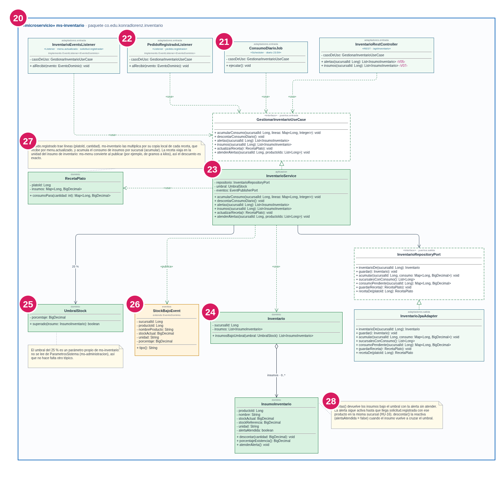
| N.º | Qué marca (página 4b, los mismos números de la guía de los diagramas) |
|---|---|
| ms-inventario | |
| ConsumoDiarioJob «Scheduler» | |
| PedidoRegistradoListener | |
| InventarioService | |
| Inventario ◇ InsumoInventario | |
| UmbralStock | |
| StockBajoEvent | |
| Recetas locales | |
| La alerta |
7. ms-solicitudes · lo que pide la cocina
«ms-solicitudes lleva el estado de cada solicitud de la cocina; los cambios de estado llegan por eventos de compras.»
Las solicitudes de alimentos del jefe de cocina y sus estados (PENDIENTE, EN TRÁMITE, COMPLETADA). El jefe ve las suyas y el auxiliar de compras ve todas con los filtros de HU-07. Con cotizacion.enviada pasa a EN TRÁMITE las que quedaron cotizadas y con orden.generada las completa.
- Publica
solicitud.registrada→ ms-inventario, ms-notificaciones, ms-analiticasolicitud.en-tramite→ ms-notificacionesauditoria.evento→ ms-administracion- Consume
cotizacion.enviada← ms-cotizacionesorden.generada← ms-ordenes- Base y tablas
solicitud,item_solicitud,cotizacion_aplicada,outbox,evento_procesado- Síncrono
- Ninguno.
- Patrones
- HexagonalPublish-SubscribeConsumidor idempotente (por cotización)
Ventanas que atiende
 V08 · Nueva solicitud de alimentos
V08 · Nueva solicitud de alimentos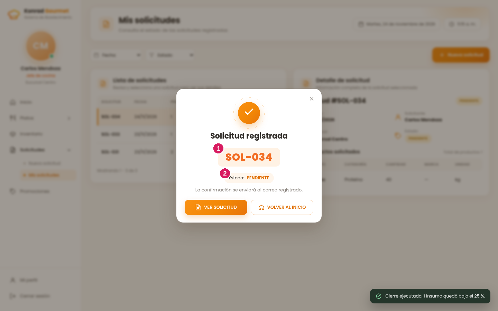
V09 · Solicitud registrada V10 · Mis solicitudes
V10 · Mis solicitudes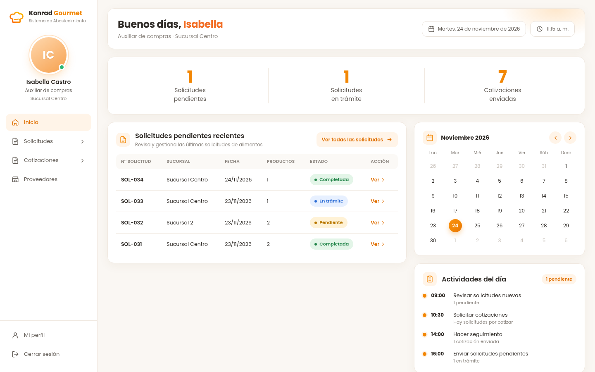
V11 · Inicio del auxiliar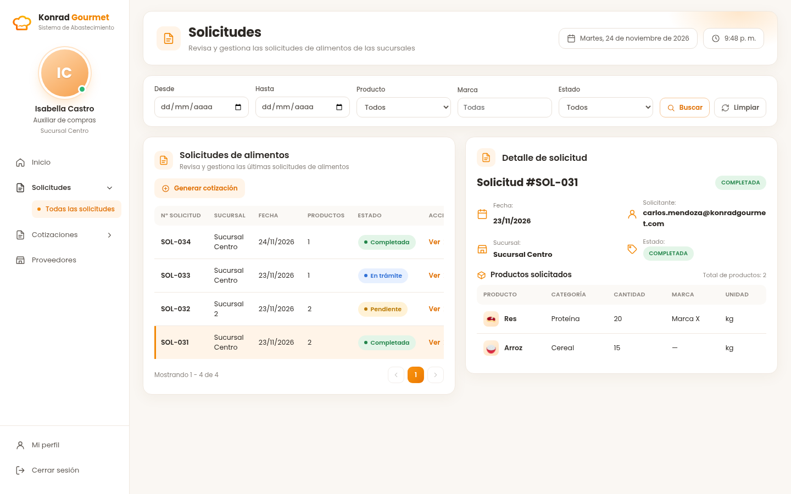
V12 · Solicitudes, con «Generar cotización»Lo que entra al servicio
| Tipo | Ruta, tópico o cuándo corre | Para qué | Clase |
|---|---|---|---|
| Kafka | cotizacion.enviada | Pasa a EN TRÁMITE las solicitudes cotizadas y publica solicitud.en-tramite | CotizacionEventsListener |
| Kafka | orden.generada | Completa las solicitudes de la orden | CotizacionEventsListener |
| REST | POST /api/solicitudes | V08: registra la solicitud y publica solicitud.registrada | SolicitudRestController |
| REST | GET /api/solicitudes?solicitante=… | V10: las solicitudes del jefe | SolicitudRestController |
| REST | GET /api/solicitudes | V11 y V12: todas, con los filtros de HU-07, de a 25 | SolicitudRestController |
| REST | GET /api/solicitudes/{numero} | V12: el detalle con sus productos | SolicitudRestController |
Sus clases
Núcleo (12 clases, Java sin frameworks)
- adaptadores/entrada/
CotizacionEventsListener,SolicitudRestController - adaptadores/salida/
SolicitudJpaAdapter - aplicacion/
SolicitudService - dominio/
CriteriosConsulta,EstadoSolicitud,ItemSolicitud,SolicitudAlimentos - eventos/
SolicitudEnTramiteEvent,SolicitudRegistradaEvent - puertos/entrada/
GestionarSolicitudUseCase - puertos/salida/
SolicitudRepositoryPort
Adaptadores de entrada (Spring)
CotizacionEventsListener, SolicitudRestController
Adaptadores de salida (Spring)
SolicitudJpaAdapter
Además, 2 entidades y repositorios JPA internos de sus adaptadores.
Configuración
ConfiguracionSolicitudes
En negrita, las que conviene nombrar. Los adaptadores del núcleo tienen la misma forma que los de Spring; el servicio usa los de Spring.
La tabla cotizacion_aplicada recuerda qué cotizaciones ya aplicó, para no repetir el cambio de estado.
Su paquete en el diagrama de clases
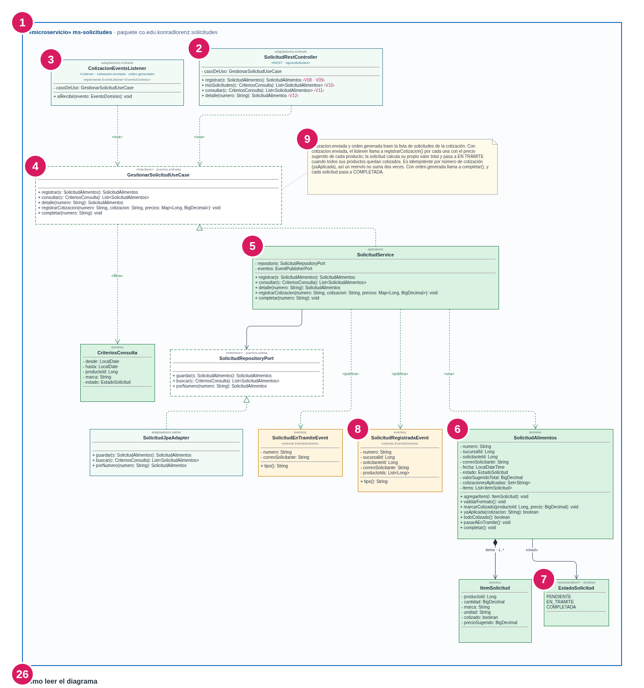
| N.º | Qué marca (página 4c, los mismos números de la guía de los diagramas) |
|---|---|
| ms-solicitudes | |
| SolicitudRestController | |
| CotizacionEventsListener | |
| GestionarSolicitudUseCase | |
| SolicitudService | |
| SolicitudAlimentos ◆ ItemSolicitud | |
| EstadoSolicitud | |
| Eventos de la solicitud | |
| Idempotencia por cotización | |
| Cómo leer el diagrama |
8. ms-cotizaciones · el corazón de compras
«ms-cotizaciones arma la cotización con el precio del Ministerio, la envía en PDF y la valida con tres reglas en cadena.»
La solicitud de cotización de una o varias solicitudes, con el precio de referencia del Ministerio y el PDF que se envía al proveedor; el registro de los valores del proveedor y la validación con la cadena de reglas (RECHAZADA, SOSPECHOSA u OPCIONADA); el reenvío de las que quedaron pendientes de precio; y los proveedores (HU-15).
- Publica
cotizacion.enviada→ ms-solicitudes, ms-notificacionescotizacion.validada→ ms-analiticaauditoria.evento→ ms-administracion- Consume
orden.generada← ms-ordenes- Base y tablas
proveedor,proveedor_categoria,cotizacion,cotizacion_solicitud,item_cotizacion,producto_nombre,outbox,evento_procesado- Síncrono
- Llama a ms-integracion (
GET /interno/precios/{id}, por Eureka y con el JWT del auxiliar) para el precio de referencia. Lo llama ms-ordenes para leer una cotización OPCIONADA. - Patrones
- Facade (GenerarCotizacionFacade)Chain of Responsibility (ReglaValidacion)Claim check (PDF en S3)HexagonalPublish-Subscribe
Ventanas que atiende
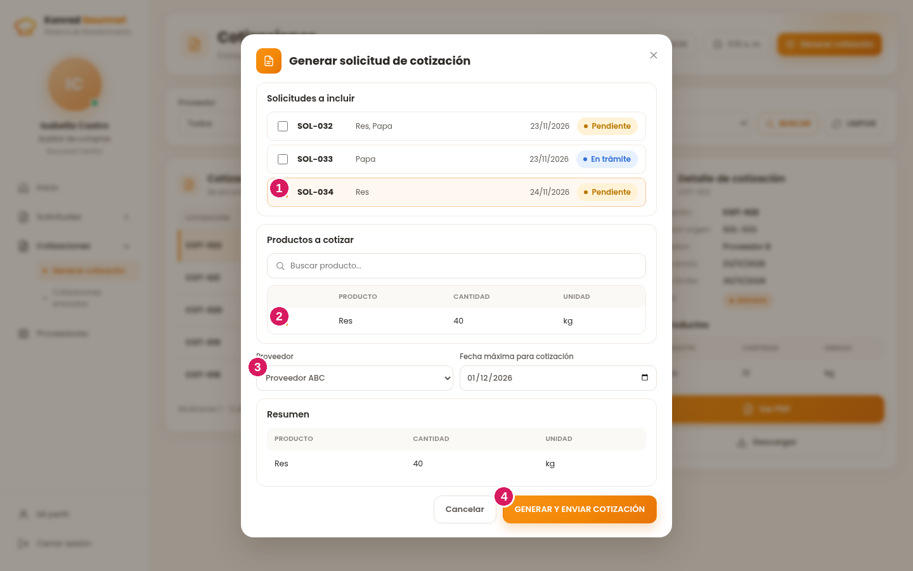
V13 · Generar solicitud de cotización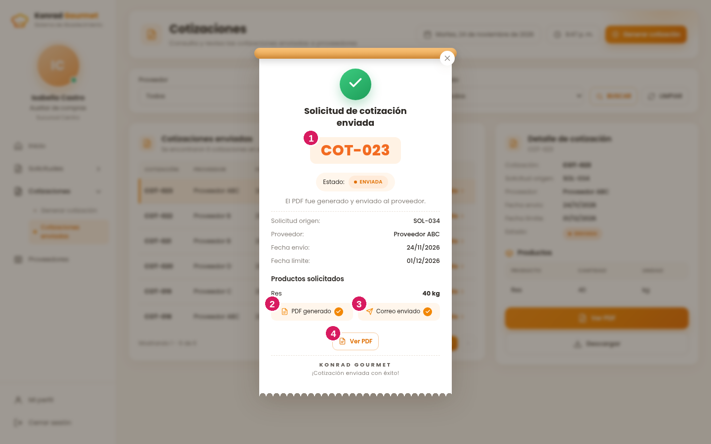
V14 · Cotización enviada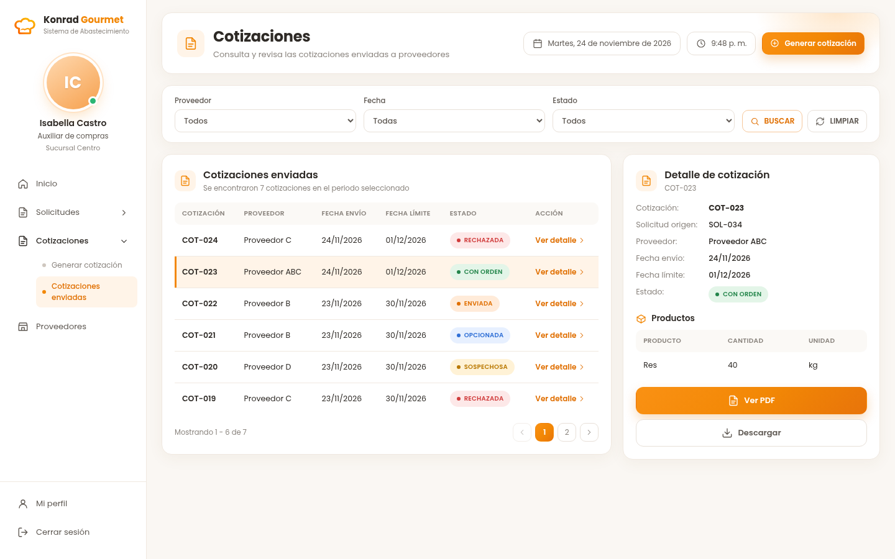
V15 · Cotizaciones enviadas V16 · Inicio de la directora
V16 · Inicio de la directora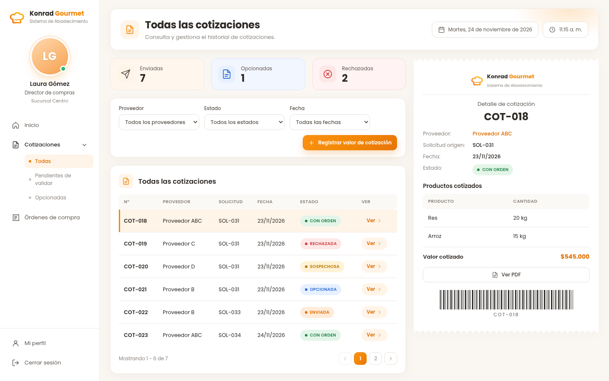
V17 · Todas las cotizaciones V18 · Registrar valores de cotización
V18 · Registrar valores de cotización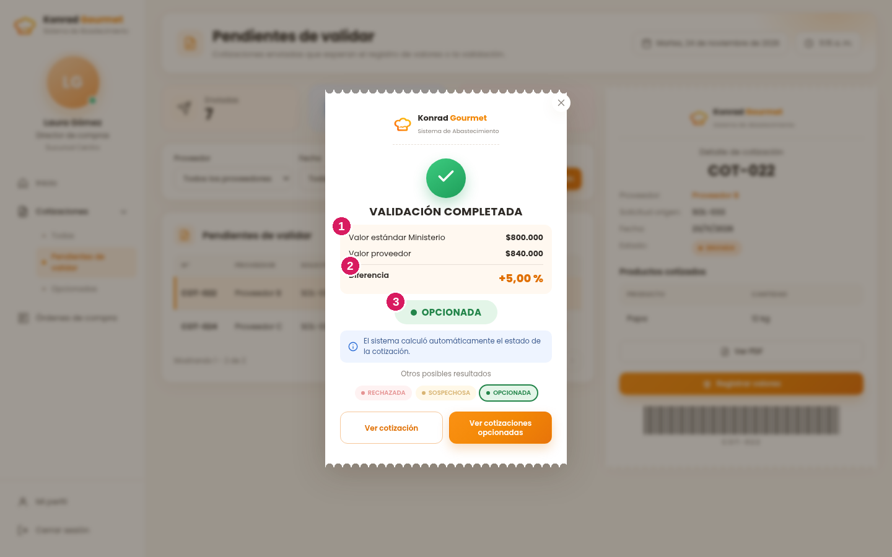
V19 · Validación completada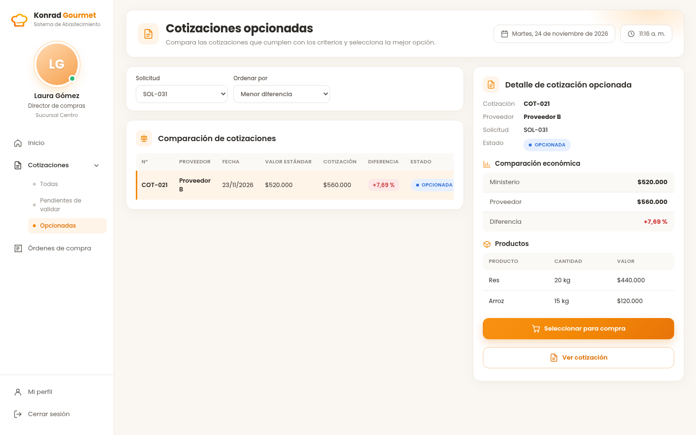
V20 · Cotizaciones opcionadas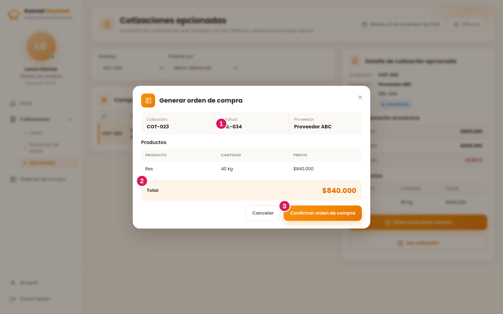
V21 · Generar orden de compra (en parte)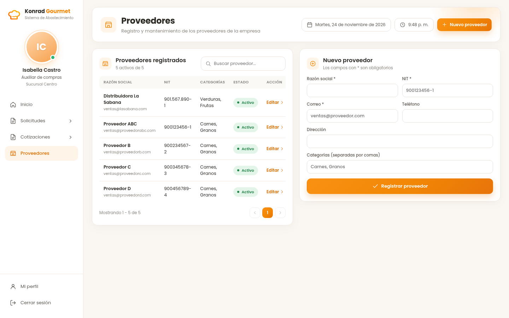
Proveedores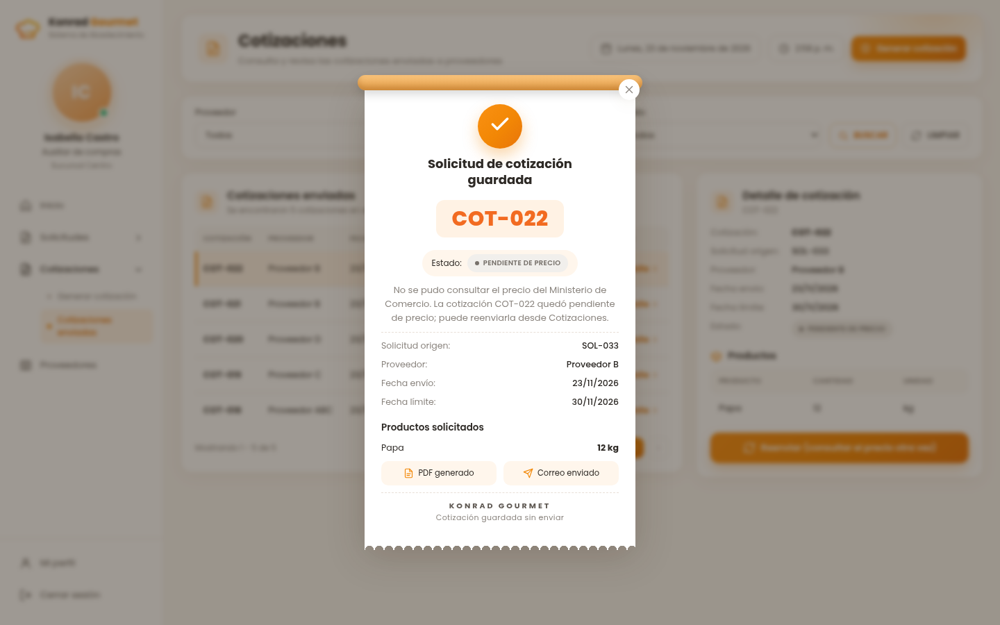
Reenviar una cotización pendiente de precioLo que entra al servicio
| Tipo | Ruta, tópico o cuándo corre | Para qué | Clase |
|---|---|---|---|
| REST | POST /api/cotizaciones | V13: genera, arma el PDF y publica cotizacion.enviada | CotizacionRestController |
| REST | GET /api/cotizaciones/{numero}/pdf | V14: el PDF de la cotización | CotizacionRestController |
| REST | GET /api/cotizaciones | V15 y V17: la lista con filtros | CotizacionRestController |
| REST | GET /api/cotizaciones/pendientes | V16: las que esperan valores | CotizacionRestController |
| REST | PUT /api/cotizaciones/{numero}/valores | V18: los valores del proveedor | CotizacionRestController |
| REST | POST /api/cotizaciones/{numero}/validacion | V19: la cadena de reglas; publica cotizacion.validada | CotizacionRestController |
| REST | GET /api/cotizaciones?estado=OPCIONADA | V20: las opcionadas | CotizacionRestController |
| REST | GET /api/cotizaciones/{numero} | V20 y ms-ordenes: el detalle | CotizacionRestController |
| REST | POST /api/cotizaciones/{numero}/reenvio | Reenviar una cotización pendiente de precio | CotizacionRestController |
| Kafka | orden.generada | Pasa la cotización a CON ORDEN | OrdenGeneradaListener |
| REST | POST /api/proveedores | Registrar proveedor (NIT único) | ProveedorRestController |
| REST | GET /api/proveedores | Lista; V13 usa solo los activos | ProveedorRestController |
| REST | GET /api/proveedores/{id} | Detalle del proveedor | ProveedorRestController |
| REST | PUT /api/proveedores/{id} | Editar proveedor | ProveedorRestController |
| REST | PATCH /api/proveedores/{id}/inactivar | Inactivar proveedor | ProveedorRestController |
Sus clases
Núcleo (28 clases, Java sin frameworks)
- adaptadores/entrada/
CotizacionRestController,OrdenGeneradaListener,ProveedorRestController - adaptadores/salida/
AlmacenObjetosAdapter,CotizacionJpaAdapter,PdfCotizacionAdapter,PrecioSugeridoRestAdapter,ProveedorJpaAdapter - aplicacion/
CotizacionService,GenerarCotizacionFacade,ProveedorService - dominio/
Cotizacion,EstadoCotizacion,ItemCotizacion,Proveedor,ReglaOpcionada,ReglaRechazada,ReglaSospechosa,ReglaValidacion - eventos/
CotizacionEnviadaEvent,CotizacionValidadaEvent - puertos/entrada/
GestionarCotizacionUseCase,GestionarProveedorUseCase - puertos/salida/
AlmacenArchivosPort,CotizacionRepositoryPort,GeneradorPdfPort,PrecioSugeridoPort,ProveedorRepositoryPort
Adaptadores de entrada (Spring)
CotizacionRestController, OrdenGeneradaListener, ProveedorRestController
Adaptadores de salida (Spring)
AlmacenObjetosAdapter, CotizacionJpaAdapter, PdfCotizacionAdapter, PrecioSugeridoRestAdapter, ProveedorJpaAdapter
Además, 4 entidades y repositorios JPA internos de sus adaptadores.
Configuración
ConfiguracionCotizaciones, NombresProductos, NumeracionCotizaciones
En negrita, las que conviene nombrar. Los adaptadores del núcleo tienen la misma forma que los de Spring; el servicio usa los de Spring.
orden.generada en Kafka y la cotización pasa a CON ORDEN al volver.Si ms-integracion o el Ministerio no responden, la fachada guarda la cotización como PENDIENTE DE PRECIO sin enviarla y el auxiliar la reenvía después. El correo no lleva el PDF: lleva su ubicación en el almacén (claim check) y ms-notificaciones lo descarga.
Su paquete en el diagrama de clases
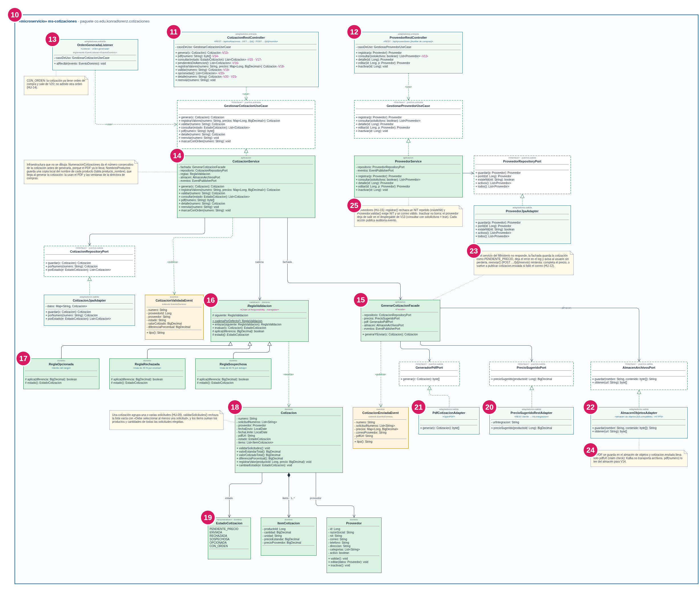
| N.º | Qué marca (página 4c, los mismos números de la guía de los diagramas) |
|---|---|
| ms-cotizaciones | |
| CotizacionRestController | |
| ProveedorRestController | |
| OrdenGeneradaListener | |
| CotizacionService | |
| GenerarCotizacionFacade «Facade» | |
| ReglaValidacion «abstract» · Chain of Responsibility | |
| Las tres reglas | |
| Cotizacion ◆ ItemCotizacion | |
| EstadoCotizacion | |
| PrecioSugeridoRestAdapter | |
| PdfCotizacionAdapter | |
| AlmacenObjetosAdapter | |
| Si el Ministerio no responde | |
| Claim check | |
| Proveedores |
9. ms-ordenes · la compra
«ms-ordenes convierte una cotización opcionada en orden de compra, con su PDF, y avisa con orden.generada.»
La orden de compra que la directora genera desde una cotización OPCIONADA (una sola por cotización), con su PDF en el almacén de objetos, y su seguimiento hasta que el pedido llega y pasa a FINALIZADA.
- Publica
orden.generada→ ms-solicitudes, ms-cotizaciones, ms-notificaciones, ms-analiticaauditoria.evento→ ms-administracion- Consume
- Nada
- Base y tablas
orden_compra,orden_solicitud,item_orden,producto_nombre,outbox- Síncrono
- Llama a ms-cotizaciones (
GET /api/cotizaciones/{numero}, por Eureka y con el JWT de la directora) para leer la cotización; solo acepta las OPCIONADAS. - Patrones
- HexagonalPublish-SubscribeClaim check (PDF en S3)
Ventanas que atiende

Lo que entra al servicio
| Tipo | Ruta, tópico o cuándo corre | Para qué | Clase |
|---|---|---|---|
| REST | POST /api/ordenes-compra | V21: genera la orden y publica orden.generada | OrdenCompraRestController |
| REST | GET /api/ordenes-compra | V23: las órdenes | OrdenCompraRestController |
| REST | GET /api/ordenes-compra/{numero}/pdf | V22 y V23: el PDF de la orden | OrdenCompraRestController |
| REST | PATCH /api/ordenes-compra/{numero}/finalizar | V23: «Marcar como recibida», pasa a FINALIZADA | OrdenCompraRestController |
Sus clases
Núcleo (16 clases, Java sin frameworks)
- adaptadores/entrada/
OrdenCompraRestController - adaptadores/salida/
AlmacenObjetosAdapter,CotizacionRestClient,OrdenJpaAdapter,PdfOrdenAdapter - aplicacion/
OrdenCompraService - dominio/
CotizacionOpcionada,EstadoOrden,ItemOrden,OrdenCompra - eventos/
OrdenGeneradaEvent - puertos/entrada/
GenerarOrdenUseCase - puertos/salida/
AlmacenArchivosPort,CotizacionConsultaPort,GeneradorPdfPort,OrdenRepositoryPort
Adaptadores de entrada (Spring)
OrdenCompraRestController
Adaptadores de salida (Spring)
AlmacenObjetosAdapter, CotizacionRestClient, OrdenJpaAdapter, PdfOrdenAdapter
Además, 2 entidades y repositorios JPA internos de sus adaptadores.
Configuración
ConfiguracionOrdenes, NombresProductos
En negrita, las que conviene nombrar. Los adaptadores del núcleo tienen la misma forma que los de Spring; el servicio usa los de Spring.
Es el único servicio cuyo caso de uso necesita una respuesta inmediata de otro: la orden se arma con los precios y cantidades de la cotización en ese momento.
Su paquete en el diagrama de clases
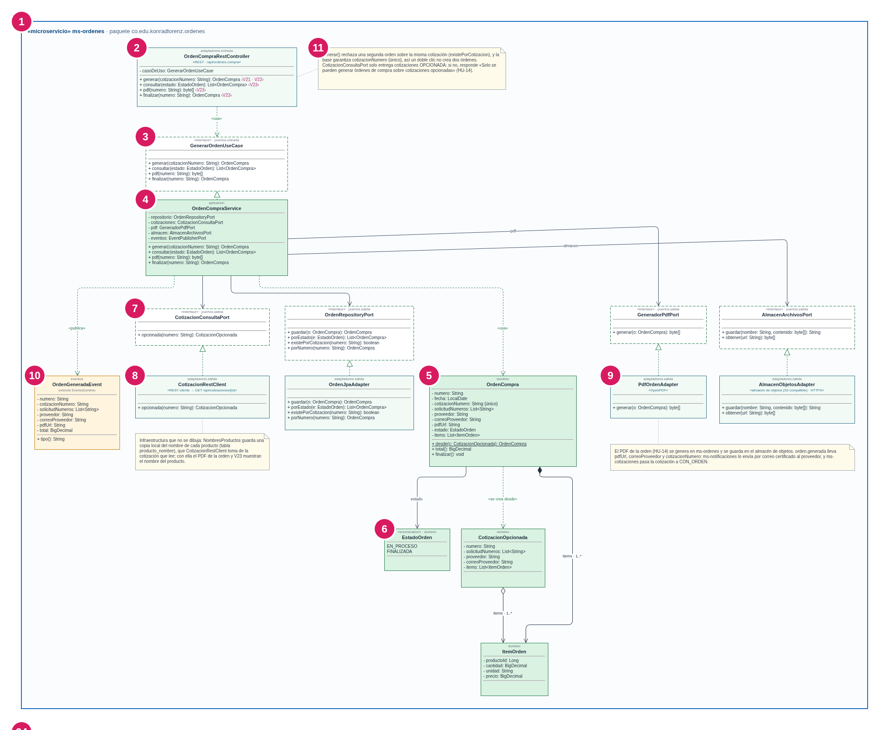
| N.º | Qué marca (página 4d, los mismos números de la guía de los diagramas) |
|---|---|
| ms-ordenes | |
| OrdenCompraRestController | |
| GenerarOrdenUseCase | |
| OrdenCompraService | |
| OrdenCompra ◆ ItemOrden | |
| EstadoOrden | |
| CotizacionConsultaPort | |
| CotizacionRestClient | |
| PdfOrdenAdapter | |
| OrdenGeneradaEvent | |
| Una sola orden por cotización |
10. ms-notificaciones · los avisos
«ms-notificaciones solo escucha: convierte seis tipos de evento en correos certificados y en la alarma en vivo.»
Los correos certificados (huella SHA-256 y estampa cronológica) de la alarma de stock bajo, la solicitud registrada, la solicitud en trámite, la cotización enviada al proveedor, la orden generada y las promociones, con el PDF adjunto; la alarma en vivo al jefe de cocina (Redis y WebSocket); la libreta de destinatarios; y la traza de envíos que muestra V14. Si un correo falla, reintenta y lo deja en la cola de errores.
- Publica
auditoria.evento→ ms-administracionnotificaciones.dlq→ ms-notificaciones (los envíos que fallaron)- Consume
inventario.stock-bajo← ms-inventariosolicitud.registrada← ms-solicitudessolicitud.en-tramite← ms-solicitudescotizacion.enviada← ms-cotizacionesorden.generada← ms-ordenestendencia.detectada← ms-analiticanotificaciones.dlq← ms-notificacionesnotificaciones.dlq← ms-notificaciones (los vuelve a procesar)- Base y tablas
destinatario,envio,sucursal,outbox,evento_procesado- Síncrono
- Ninguno con otros servicios. Hacia afuera: el servidor de correo (SMTP), Redis para la alarma y el almacén de objetos para descargar el PDF adjunto.
- Patrones
- Factory Method (CreadorNotificacion)Decorator (CorreoDecorator)Publish-SubscribeCola de errores (DLQ)Redis pub/sub (PD-01)
Ventanas que atiende

Lo que entra al servicio
| Tipo | Ruta, tópico o cuándo corre | Para qué | Clase |
|---|---|---|---|
| REST | POST /api/notificaciones/destinatarios | Destinatarios de alertas: agregar | DestinatarioRestController |
| REST | GET /api/notificaciones/destinatarios | Destinatarios de alertas: la libreta | DestinatarioRestController |
| Kafka | inventario.stock-bajo | Correo de stock bajo y alarma en vivo al jefe | NotificacionListeners |
| Kafka | solicitud.registrada | Correo de solicitud registrada (V09) | NotificacionListeners |
| Kafka | solicitud.en-tramite | Correo al jefe: su solicitud está en trámite | NotificacionListeners |
| Kafka | cotizacion.enviada | Correo al proveedor con el PDF (V14) | NotificacionListeners |
| Kafka | orden.generada | Correo al proveedor con la orden (V22) | NotificacionListeners |
| Kafka | tendencia.detectada | Correo de promociones a los jefes de todas las sucursales | NotificacionListeners |
| REST | GET /api/notificaciones/envios | V14: la traza de envíos de un recorrido (?correlacion=…) | EnviosController |
| Kafka | notificaciones.dlq | Vuelve a procesar los envíos fallidos cada 5 minutos, hasta tres veces | ReprocesoColaErrores |
| WebSocket | /api/notificaciones/alarmas | V05: la alarma en vivo (token en ?access_token=) | ConfiguracionWebSocket |
Sus clases
Núcleo (24 clases, Java sin frameworks)
- adaptadores/entrada/
DestinatarioRestController,NotificacionListeners - adaptadores/salida/
AlarmaPushAdapter,AlmacenObjetosAdapter,CorreoCertificadoDecorator,CorreoDecorator,CorreoSmtpAdapter,DestinatarioJpaAdapter,EnvioJpaAdapter,EstampaCronologicaDecorator - aplicacion/
NotificacionService - dominio/
AlarmaApp,CreadorAlarmaApp,CreadorCorreo,CreadorNotificacion,Mensaje,Notificacion,NotificacionCorreo - puertos/entrada/
NotificarUseCase - puertos/salida/
AlarmaPushPort,AlmacenArchivosPort,Correo,DestinatarioRepositoryPort,EnvioRepositoryPort
Adaptadores de entrada (Spring)
DestinatarioRestController, NotificacionListeners
Adaptadores de salida (Spring)
AlarmaPushAdapter, AlmacenObjetosAdapter, CorreoSmtpAdapter, DestinatarioJpaAdapter, EnvioJpaAdapter
Además, 4 entidades y repositorios JPA internos de sus adaptadores.
Configuración
CanalAlarmas, ConfiguracionNotificaciones, ConfiguracionWebSocket, EnviosController, ReprocesoColaErrores
En negrita, las que conviene nombrar. Los adaptadores del núcleo tienen la misma forma que los de Spring; el servicio usa los de Spring.
notificaciones.dlq y lo vuelve a procesar cada 5 minutos, hasta tres veces.Es el único que publica y consume su propio tópico (la cola de errores). Marca el evento como procesado después de enviar, para que la traza del fallo quede igual.
Su paquete en el diagrama de clases
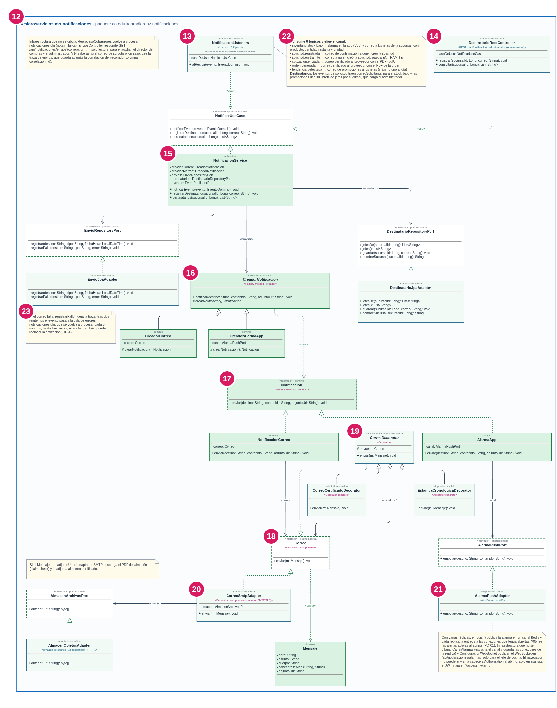
| N.º | Qué marca (página 4d, los mismos números de la guía de los diagramas) |
|---|---|
| ms-notificaciones | |
| NotificacionListeners | |
| DestinatarioRestController | |
| NotificacionService | |
| CreadorNotificacion «abstract» · Factory Method | |
| Notificacion | |
| Correo · Decorator (componente) | |
| CorreoDecorator | |
| CorreoSmtpAdapter | |
| AlarmaPushAdapter | |
| Los seis tópicos que consume | |
| Si el correo falla |
11. ms-integracion · la frontera SOA
«ms-integracion traduce el SOAP del Ministerio a un puerto del dominio y guarda los precios un día en caché.»
El único que habla SOAP: consulta el precio estándar al servicio web del Ministerio de Comercio, lo guarda un día en una caché de Redis compartida por las réplicas, y expone el servicio SOAP de abastecimiento del restaurante en /api/integracion/abastecimiento (WSDL en ?wsdl).
- Publica
auditoria.evento→ ms-administracion- Consume
- Nada
- Base y tablas
outbox- Síncrono
- Lo llama ms-cotizaciones (REST interno, que no se publica en el gateway). Él llama al Ministerio por SOAP.
- Patrones
- Adapter (MinisterioComercioAdapter)Proxy (PrecioReferenciaCacheProxy)SOA / SOAPHexagonal
Ventanas que atiende
Lo que entra al servicio
| Tipo | Ruta, tópico o cuándo corre | Para qué | Clase |
|---|---|---|---|
| REST | GET /interno/precios/{productoId} | El precio de referencia para ms-cotizaciones; no se publica en el gateway | PrecioRestController |
| SOAP | /api/integracion/abastecimiento (WSDL en ?wsdl) | El servicio SOAP del restaurante hacia afuera | AbastecimientoSoapEndpoint |
Sus clases
Núcleo (9 clases, Java sin frameworks)
- adaptadores/entrada/
AbastecimientoSoapEndpoint,PrecioRestController - adaptadores/salida/
MinisterioComercioAdapter,MinisterioSoapClient,PrecioReferenciaCacheProxy - aplicacion/
ConsultarPrecioService - dominio/
PrecioEstandar - puertos/entrada/
ConsultarPrecioUseCase - puertos/salida/
PrecioReferenciaPort
Adaptadores de entrada (Spring)
AbastecimientoSoapEndpoint, PrecioRestController
Adaptadores de salida (Spring)
MinisterioComercioAdapter, PrecioReferenciaCacheProxy
Además, 0 entidades y repositorios JPA internos de sus adaptadores.
Configuración
ConfiguracionIntegracion, MapaPreciosRedis
En negrita, las que conviene nombrar. Los adaptadores del núcleo tienen la misma forma que los de Spring; el servicio usa los de Spring.
Su base solo tiene la tabla outbox: no guarda datos de negocio, solo los eventos de auditoría que publica.
Su paquete en el diagrama de clases
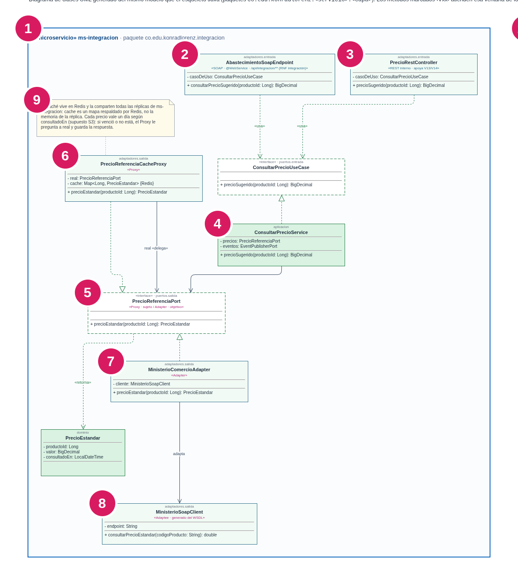
| N.º | Qué marca (página 4e, los mismos números de la guía de los diagramas) |
|---|---|
| ms-integracion | |
| AbastecimientoSoapEndpoint | |
| PrecioRestController | |
| ConsultarPrecioService | |
| PrecioReferenciaPort | |
| PrecioReferenciaCacheProxy «Proxy» | |
| MinisterioComercioAdapter «Adapter» | |
| MinisterioSoapClient «Adaptee» | |
| La caché es compartida |
12. ms-administracion · parámetros, auditoría y logs
«ms-administracion guarda los parámetros y el tema, y la bitácora de lo que hacen todos los demás.»
Los parámetros del sistema y la imagen corporativa (el Singleton ParametrosSistema, que cada réplica refresca de la base), la bitácora de auditoría de todos los servicios (escucha auditoria.evento) y los logs de errores, que consulta en Elasticsearch.
- Publica
- Nada
- Consume
auditoria.evento← ms-identidad, ms-pedidos, ms-menu, ms-inventario, ms-solicitudes, ms-cotizaciones, ms-ordenes, ms-notificaciones, ms-integracion, ms-analitica- Base y tablas
auditoria,parametro,outbox,evento_procesado- Síncrono
- Ninguno con otros servicios; consulta Elasticsearch para los logs.
- Patrones
- Singleton (ParametrosSistema)Publish-Subscribe (consumidor de auditoría)Consumidor idempotenteHexagonal
Ventanas que atiende
Lo que entra al servicio
| Tipo | Ruta, tópico o cuándo corre | Para qué | Clase |
|---|---|---|---|
| REST | PUT /api/admin/parametros/{clave} | Parámetros y tema: guardar | AdminRestController |
| REST | GET /api/admin/parametros | Parámetros y tema: leer | AdminRestController |
| REST | GET /api/admin/parametros/tema | El tema que la SPA aplica al iniciar sesión (cualquier rol) | AdminRestController |
| REST | GET /api/admin/auditoria | Auditoría por rango de fechas | AdminRestController |
| REST | GET /api/admin/logs | Logs de errores, desde Elasticsearch | AdminRestController |
| Kafka | auditoria.evento | Escribe cada evento en la bitácora, sin repetirlo | AuditoriaListener |
| Tarea | cada minuto | Recarga ParametrosSistema de la base en cada réplica | RefrescoParametros |
Sus clases
Núcleo (14 clases, Java sin frameworks)
- adaptadores/entrada/
AdminRestController,AuditoriaListener - adaptadores/salida/
AuditoriaJpaAdapter,ElasticsearchLogsAdapter,ParametrosJpaAdapter - aplicacion/
AdministracionService - dominio/
Bitacora,LogError,ParametrosSistema,RegistroAuditoria - puertos/entrada/
AdministracionUseCase - puertos/salida/
AuditoriaRepositoryPort,LogsPort,ParametrosRepositoryPort
Adaptadores de entrada (Spring)
AdminRestController, AuditoriaListener
Adaptadores de salida (Spring)
AuditoriaJpaAdapter, ElasticsearchLogsAdapter, ParametrosJpaAdapter
Además, 4 entidades y repositorios JPA internos de sus adaptadores.
Configuración
ConfiguracionAdministracion, RefrescoParametros
En negrita, las que conviene nombrar. Los adaptadores del núcleo tienen la misma forma que los de Spring; el servicio usa los de Spring.
No publica auditoria.evento: sus propias acciones las escribe directo en su bitácora, para no mandarse un evento a sí mismo.
Su paquete en el diagrama de clases
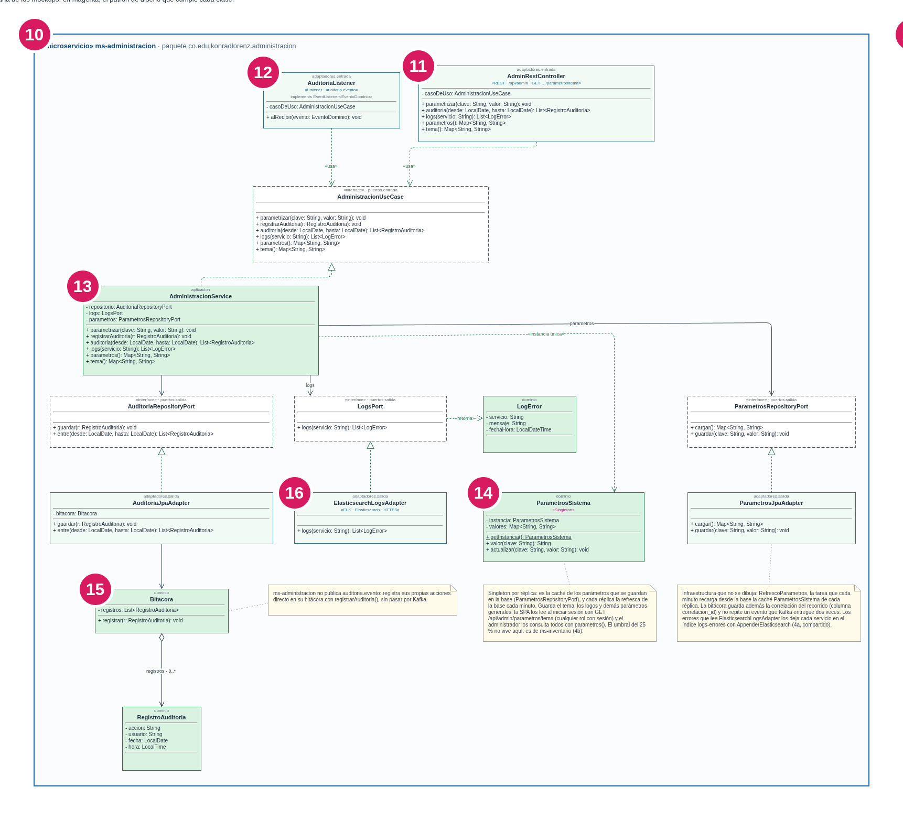
| N.º | Qué marca (página 4e, los mismos números de la guía de los diagramas) |
|---|---|
| ms-administracion | |
| AdminRestController | |
| AuditoriaListener | |
| AdministracionService | |
| ParametrosSistema «Singleton» | |
| Bitacora ◇ RegistroAuditoria | |
| ElasticsearchLogsAdapter |
13. ms-analitica · el tablero y las promociones
«ms-analitica arma sus propios hechos con los eventos y calcula cada KPI con una estrategia intercambiable.»
El tablero BAM del director comercial (producto y sucursal con mayor demanda y proveedor con mejores precios, con su ranking y su periodo) sobre su propio almacén de hechos, que arma con los eventos del negocio; y las promociones sugeridas al jefe de cocina, que salen de cruzar las tendencias de las redes sociales con los platos más pedidos.
- Publica
tendencia.detectada→ ms-notificacionesauditoria.evento→ ms-administracion- Consume
pedido.registrado← ms-pedidosmenu.actualizado← ms-menuinventario.stock-bajo← ms-inventariosolicitud.registrada← ms-solicitudescotizacion.validada← ms-cotizacionesorden.generada← ms-ordenes- Base y tablas
hecho,evento_procesado,plato_nombre,sucursal,sugerencia,shedlock,outbox- Síncrono
- Ninguno con otros servicios; consulta la API de tendencias de las redes sociales.
- Patrones
- Strategy (CalculadorKpi)Publish-SubscribeTarea programada con ShedLockConsumidor idempotente
Ventanas que atiende

Lo que entra al servicio
| Tipo | Ruta, tópico o cuándo corre | Para qué | Clase |
|---|---|---|---|
| Kafka | pedido.registrado | Hecho de demanda (producto y sucursal) | NegocioEventsListener |
| Kafka | cotizacion.validada | Hecho de precios (proveedor con mejores precios) | NegocioEventsListener |
| Kafka | inventario.stock-bajo | Hecho de stock bajo | NegocioEventsListener |
| Kafka | solicitud.registrada | Hecho de solicitud | NegocioEventsListener |
| Kafka | orden.generada | Hecho de compra | NegocioEventsListener |
| REST | GET /api/bam/promociones | Promociones sugeridas al jefe | PromocionRestController |
| REST | PATCH /api/bam/promociones/{id}/aceptar | Aceptar una promoción | PromocionRestController |
| REST | PATCH /api/bam/promociones/{id}/descartar | Descartar una promoción | PromocionRestController |
| REST | GET /api/bam/kpis | Tablero BAM: los tres indicadores con su ranking | TableroRestController |
| Tarea | los lunes a las 6:00 (0 0 6 * * MON) | Consulta las redes, cruza con la demanda y publica tendencia.detectada | TendenciasJob |
| Kafka | menu.actualizado | Copia local de los nombres de los platos | NombresNegocio |
Sus clases
Núcleo (21 clases, Java sin frameworks)
- adaptadores/entrada/
NegocioEventsListener,PromocionRestController,TableroRestController,TendenciasJob - adaptadores/salida/
KpiJpaAdapter,RedesSocialesAdapter,SugerenciaJpaAdapter - aplicacion/
TableroService - dominio/
CalculadorKpi,EstadoSugerencia,HechoNegocio,ProductoMayorDemanda,ProveedorMejoresPrecios,ResultadoKpi,SucursalMayorDemanda,SugerenciaPromocion - eventos/
TendenciaDetectadaEvent - puertos/entrada/
TableroUseCase - puertos/salida/
KpiRepositoryPort,SugerenciaRepositoryPort,TendenciasPort
Adaptadores de entrada (Spring)
NegocioEventsListener, PromocionRestController, TableroRestController, TendenciasJob
Adaptadores de salida (Spring)
KpiJpaAdapter, SugerenciaJpaAdapter
Además, 4 entidades y repositorios JPA internos de sus adaptadores.
Configuración
ConfiguracionAnalitica, NombresNegocio
En negrita, las que conviene nombrar. Los adaptadores del núcleo tienen la misma forma que los de Spring; el servicio usa los de Spring.
No lee las bases de los otros servicios: guarda solo los hechos que necesita (tabla hecho). TendenciasJob corre los lunes a las 6:00 (en el equipo, cada 30 segundos, para la demo).
Su paquete en el diagrama de clases
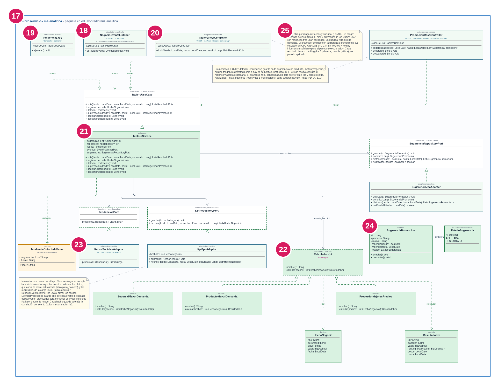
| N.º | Qué marca (página 4e, los mismos números de la guía de los diagramas) |
|---|---|
| ms-analitica | |
| NegocioEventsListener | |
| TendenciasJob «Scheduler» | |
| TableroRestController | |
| TableroService | |
| CalculadorKpi «Strategy» | |
| RedesSocialesAdapter | |
| SugerenciaPromocion | |
| Cómo se filtran los KPI |
14. Qué pasa si se cae cada uno
La regla general: si un servicio cae, los demás siguen y sus eventos esperan en Kafka. Lo que se pierde es la
ventana de ese servicio, no el trabajo de los otros. Los eventos que el servicio caído debía publicar no se pierden
porque ya estaban en su tabla outbox; los que debía recibir esperan en el broker y, al volver, los procesa una
sola vez (evento_procesado).
| Servicio | Qué deja de funcionar y qué sigue |
|---|---|
| ms-identidad | Nadie puede iniciar sesión ni crear usuarios. Las sesiones abiertas siguen: el gateway y los servicios validan la firma con la llave pública que ya descargaron, mientras la llave no cambie. Por eso en el despliegue es, después de ms-pedidos, el que más réplicas tiene. |
| ms-pedidos | Los meseros no pueden registrar pedidos. Nada más se detiene: el inventario y la analítica simplemente no reciben pedidos nuevos. Si lo que se cae es ms-menu, ms-pedidos sigue tomando pedidos con su copia del catálogo. |
| ms-menu | El jefe de cocina no puede crear ni editar platos, las fotos del catálogo de V03 no cargan y V08 no puede listar los productos para registrar una solicitud. Los pedidos siguen, porque ms-pedidos tiene su copia del catálogo, y ms-inventario conserva sus recetas. |
| ms-inventario | V05 y V07 no cargan. Los pedidos siguen registrándose y sus eventos esperan en Kafka: al volver los procesa y el consumo queda pendiente hasta el siguiente cierre, que lo descuenta completo y sin repetirlo. Con varias réplicas, ShedLock deja que el cierre lo corra una sola. |
| ms-solicitudes | No se registran ni se consultan solicitudes (V08 a V12) y el auxiliar no llega a V13 desde V12. Las cotizaciones y órdenes que se emitan mientras tanto dejan sus eventos en Kafka y las solicitudes cambian de estado al volver. |
| ms-cotizaciones | No se cotiza ni se valida (V13 a V20 y Proveedores) y ms-ordenes no puede generar órdenes: responde 503 con «No se pudo leer la cotización…», que la directora puede reintentar. Las órdenes ya generadas dejan orden.generada en Kafka y la cotización pasa a CON ORDEN al volver. |
| ms-ordenes | La directora no puede generar ni ver órdenes (V21 a V23). Las solicitudes y las cotizaciones siguen igual: solo cambian de estado cuando hay orden. |
| ms-notificaciones | No salen correos ni la alarma en vivo, pero nada se pierde: los eventos esperan en Kafka y al volver envía los pendientes. V05 sigue mostrando las alertas, porque las lee de ms-inventario. Si el que falla es el servidor de correo, reintenta, deja el envío en notificaciones.dlq y lo vuelve a procesar cada 5 minutos, hasta tres veces. |
| ms-integracion | Las cotizaciones que se generen mientras tanto se guardan PENDIENTE DE PRECIO sin enviarse; cuando vuelve, el auxiliar las reenvía desde «Reenviar». Si el que no responde es el Ministerio, los precios que están en la caché siguen sirviendo. |
| ms-administracion | El administrador no tiene sus ventanas y la SPA inicia sesión con el tema de siempre. Los eventos de auditoría esperan en Kafka y la bitácora se completa al volver, sin repetir los que ya tenía. |
| ms-analitica | No hay tablero ni promociones. Los eventos del negocio esperan en Kafka y los hechos se ponen al día al volver; ningún otro servicio depende de ms-analitica. |
15. Guion sugerido para explicar un servicio
Para explicar cualquier servicio en uno o dos minutos, en este orden. Cada paso responde una pregunta que el jurado suele hacer, así que si interrumpen ya se tiene la respuesta en la mano.
Y se cierra con el patrón que tiene, señalando la clase en el diagrama de clases (el número de la guía de los diagramas).
🎤 Ejemplo completo: ms-cotizaciones (unos 2 minutos)
«ms-cotizaciones es el corazón de compras: arma la solicitud de cotización, la envía al proveedor y la valida.
Lo usan dos roles. El auxiliar de compras genera la cotización en V13, desde una o varias solicitudes, y gestiona los proveedores; la directora de compras registra los valores que le responde el proveedor en V18 y la valida en V19.
Entra por dos prefijos del gateway, /api/cotizaciones y /api/proveedores, y escucha un solo
tópico: orden.generada, para pasar la cotización a CON ORDEN.
Tiene su propia base, ms_cotizaciones, con los proveedores, las cotizaciones, sus ítems y la relación con
las solicitudes; ningún otro servicio la lee.
Al generar, publica cotizacion.enviada: ms-notificaciones manda el correo al proveedor con el PDF y
ms-solicitudes pasa las solicitudes a EN TRÁMITE. Al validar, publica cotizacion.validada, que alimenta el
tablero de ms-analitica. Y todo lo que hace queda en la auditoría.
Es uno de los dos servicios con una llamada síncrona: pide el precio de referencia a ms-integracion, que lo consulta al Ministerio por SOAP. Si no responde, la cotización no se pierde: queda PENDIENTE DE PRECIO y el auxiliar la reenvía después. Si se cae ms-cotizaciones, no se cotiza, pero los pedidos, el inventario y las solicitudes siguen.
En el diagrama de clases, la página 4c, se ven sus dos patrones: GenerarCotizacionFacade, una fachada
que coordina en un solo clic el precio, el PDF, el guardado y el evento, y la cadena de reglas
ReglaRechazada → ReglaSospechosa → ReglaOpcionada, Chain of Responsibility, donde
cada regla decide o le pasa a la siguiente.»
🎤 Si piden los once en un minuto
«Son once servicios, uno por subdominio, cada uno con su base. Seis siguen el ciclo del abastecimiento: ms-menu tiene la carta; ms-pedidos, lo que piden las mesas; ms-inventario descuenta cada noche y avisa cuando un insumo baja del 25 %; ms-solicitudes lleva lo que pide la cocina; ms-cotizaciones cotiza y valida; ms-ordenes genera la compra. Cinco son transversales: ms-identidad emite el token y el menú de cada rol; ms-notificaciones manda los correos certificados y la alarma; ms-integracion habla SOAP con el Ministerio; ms-administracion guarda los parámetros y la auditoría; y ms-analitica arma el tablero y las promociones. Delante están el gateway, que es la única puerta, y Eureka, que sabe dónde está cada instancia. Entre ellos se hablan por diez tópicos de Kafka, y solo hay dos llamadas directas.»
16. Preguntas probables
- ¿Por qué once servicios y no menos?
- Porque cada uno es un subdominio con su propio ciclo de datos y su propia carga. ms-pedidos escala de 4 a 20 réplicas en hora pico y ms-menu se queda en 2 a 4; si fueran uno solo habría que escalar todo junto. Los seis del ciclo siguen los datos de un rol al siguiente; los cinco transversales (identidad, notificaciones, integración, administración y analítica) sirven a todos.
- ¿Por qué una base por servicio? ¿No es duplicar datos?
- Para que ningún servicio dependa del esquema de otro: cada uno cambia su base sin romper a nadie. Lo que se duplica son copias pequeñas y de solo lectura que llegan por eventos: el catálogo en ms-pedidos, las recetas en ms-inventario, los nombres de productos en ms-cotizaciones y ms-ordenes, los hechos en ms-analitica. En PostgreSQL cada servicio tiene su usuario y no puede conectarse a la base de otro.
- ¿Por qué hay llamadas síncronas si la arquitectura es de eventos?
- Solo dos, y en las dos el usuario necesita la respuesta en ese momento: el precio de referencia para armar la cotización y los datos de la cotización para armar la orden. Las dos tienen salida si el otro no responde (PENDIENTE DE PRECIO y el 503 con reintento). Todo lo que puede pasar después, como el correo, la auditoría o el inventario, va por eventos.
- ¿Qué pasa si Kafka entrega un evento dos veces?
- No se procesa dos veces. Cada consumidor guarda el id del evento en su tabla evento_procesado, en la misma transacción que su cambio, y descarta el que ya vio: un pedido.registrado repetido no se descuenta dos veces del inventario.
- ¿Y si el servicio se cae justo después de guardar y antes de publicar?
- Por eso está la outbox: el evento se guarda en la tabla outbox en la misma transacción que el cambio. Si la transacción se confirma, el evento está; el relé lo publica cuando puede. Si no se confirma, no hay ni cambio ni evento.
- ¿Por qué ms-administracion no publica auditoria.evento?
- Porque es el que lo consume: publicarse un evento a sí mismo solo agregaría un viaje por Kafka. Sus acciones van directo a su bitácora en la misma transacción.
- ¿Por qué ms-integracion tiene base si no guarda datos de negocio?
- Para la outbox de sus eventos de auditoría: como todos, publica a través de su tabla outbox para no perder eventos. Los precios no van en la base sino en la caché de Redis, que comparten sus réplicas.
- ¿Cómo sabe el gateway a qué réplica mandar?
- Le pregunta a Eureka. Cada réplica se registra al arrancar y manda un latido; el gateway enruta a lb://ms-… y el balanceador escoge una instancia viva. Una réplica que arranca recibe tráfico sin tocar la configuración.
- Si el gateway valida el token, ¿para qué lo valida otra vez cada servicio?
- Defensa en profundidad: dentro de la red alguien podría llamar a un servicio directamente. Cada servicio comprueba la firma y el rol con @PreAuthorize, y toma el usuario y la sucursal del token, nunca del cuerpo de la petición.
- ¿Cómo llega la alarma al jefe si hay varias réplicas de ms-notificaciones?
- Por Redis (PD-01): la réplica que procesa inventario.stock-bajo publica en un canal de Redis y todas las réplicas lo escuchan; la que tiene abierto el WebSocket del jefe se la entrega. Si la conexión no está, V05 relee las alertas de ms-inventario al abrir.
- ¿Qué pasa si el correo falla?
- ms-notificaciones reintenta; si sigue fallando, deja el envío en la cola de errores notificaciones.dlq y la vuelve a procesar cada 5 minutos, hasta tres veces. La traza de cada intento queda en su tabla envio y V14 la muestra.
- ¿Dónde están los patrones de diseño?
- Facade y Chain of Responsibility en ms-cotizaciones; Factory Method y Composite en ms-identidad; Factory Method y Decorator en ms-notificaciones; Adapter y Proxy en ms-integracion; Singleton en ms-administracion; Strategy en ms-analitica; y Publish-Subscribe en todos, a través de compartido.
Konrad Gourmet · Sistema de Abastecimiento · Arquitectura de Software, Fundación Universitaria Konrad Lorenz, 2026-2